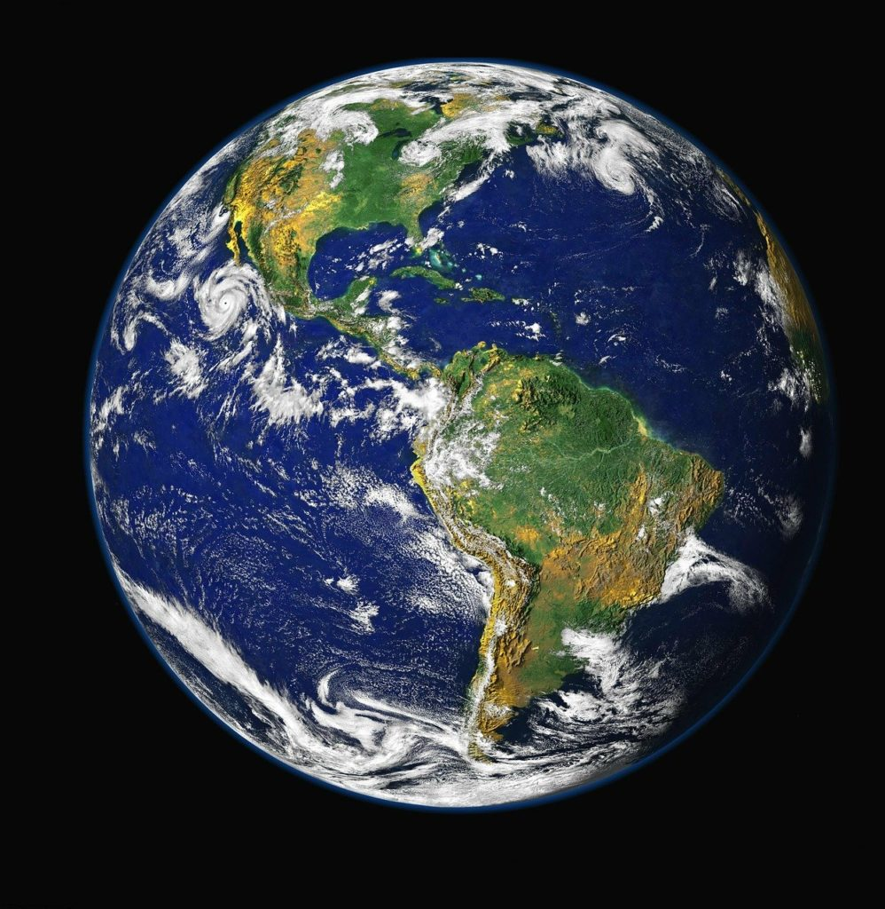

La Terra è il terzo pianeta del sistema solare in ordine di distanza dal Sole ed è l'unico posto conosciuto nell'universo in grado di ospitare la vita.
Possiede un unico satellite naturale, la Luna, ma è circondata anche da migliaia di satelliti artificiali
È un pianeta roccioso con un'età di circa 4,54 miliardi di anni. Circa il 71% della sua superficie è coperto da acqua (oceani, mari, fiumi e laghi), mentre il restante 29% è formato da terre emerse (continenti e isole).